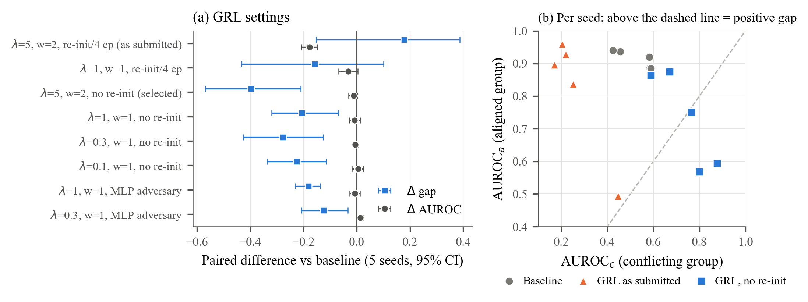

Results
Adversaries and published methods
Tuning gradient reversal#
The main comparison uses one fixed GRL setting. Seven more settings were tried (5 runs each, compared with the same runs' baseline).

Image placeholder: GRL settingsAdd
docs/assets/figures/grl_configurations.png (made by analysis/paper_figures.py)- Default settings fail again: AUROC 0.534 against 0.711 for the baseline.
- Not resetting the extra head every four epochs, with everything else the same, brings AUROC back to 0.700 and shrinks the gap by −0.396 [−0.567, −0.210]. This is also the setting that validation data alone would pick.
- Weaker reversal without resets (−0.207 to −0.276) and a two-layer extra head (−0.181, −0.124) also shrink the gap while staying within 0.015 AUROC of the baseline.
- Keeping the resets with weaker reversal does not reliably help (−0.157 [−0.432, +0.102]).
- The best setting overshoots in three of five runs, flipping the gap the other way (panel b).
- No GRL setting changes SAS by more than ±0.066.
Methods from other papers#
A separate 13-run experiment with its own baseline. Each method shows its average score and its change from that baseline, with 95% intervals. GRL, the two-layer adversary, MINE, CLUB and distance correlation work on the features. Group DRO and JTT reweight the training data. CAM regularization works on the heat map.
| Method | AUROC | Gap | Δgap [95% interval] | ΔSAS [95% interval] | ΔAUROC [95% interval] |
|---|---|---|---|---|---|
| Baseline | 0.701 | 0.364 | — | — | — |
| GRL, default (Ganin & Lempitsky, 2015) | 0.540 | 0.520 | +0.155 [−0.099, +0.364] | +0.046 [+0.012, +0.079] | −0.162 [−0.192, −0.135] |
| Two-layer adversary (Müller et al., 2024) | 0.657 | 0.054 | −0.311 [−0.410, −0.209] | +0.042 [−0.003, +0.092] | −0.044 [−0.063, −0.024] |
| MINE penalty (Belghazi et al., 2018) | 0.707 | 0.311 | −0.053 [−0.092, −0.006] | −0.011 [−0.039, +0.018] | +0.006 [−0.006, +0.017] |
| CLUB (Cheng et al., 2020) | 0.730 | 0.099 | −0.265 [−0.318, −0.193] | −0.013 [−0.056, +0.038] | +0.029 [+0.016, +0.042] |
| Group DRO (Sagawa et al., 2020) | 0.706 | 0.212 | −0.153 [−0.215, −0.090] | −0.012 [−0.048, +0.024] | +0.005 [−0.014, +0.019] |
| JTT (Liu et al., 2021) | 0.690 | 0.355 | −0.010 [−0.056, +0.035] | −0.059 [−0.098, −0.018] | −0.012 [−0.019, −0.003] |
| Distance correlation (this work) | 0.691 | 0.077 | −0.287 [−0.346, −0.233] | +0.086 [+0.041, +0.135] | −0.010 [−0.028, +0.005] |
| CAM regularization (this work) | 0.688 | 0.338 | −0.027 [−0.087, +0.030] | −0.554 [−0.579, −0.530] | −0.013 [−0.024, −0.002] |
| Both fixes (this work) | 0.684 | 0.051 | −0.314 [−0.372, −0.258] | −0.551 [−0.576, −0.526] | −0.017 [−0.033, +0.001] |
Reading the table#
- The two-layer adversary closes the gap nearly as well as distance correlation, at a higher AUROC price.
- CLUB shrinks the gap with no AUROC cost. Group DRO shrinks it by about half as much. JTT and MINE barely change it.
- In this run, default GRL raised the gap by +0.155, a smaller and less certain rise than before. It is unstable from one experiment to the next.
Look at the ΔSAS column
Every adversarial, mutual-information and reweighting method leaves SAS within 0.09 of the baseline, while CAM regularization and both fixes drop it by 0.55. A tuned adversary handles the feature problem, yet the heat maps stay as they were.